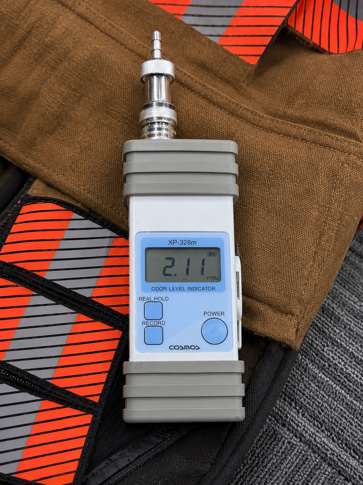
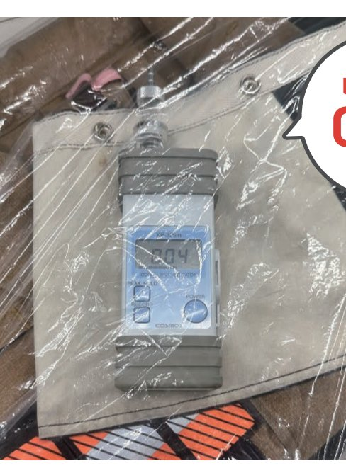
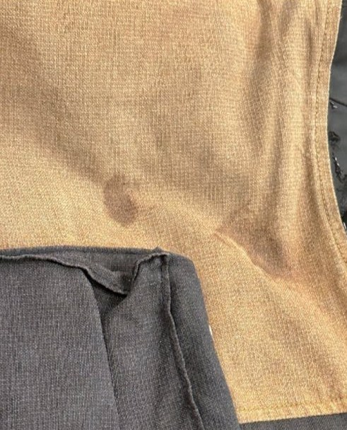
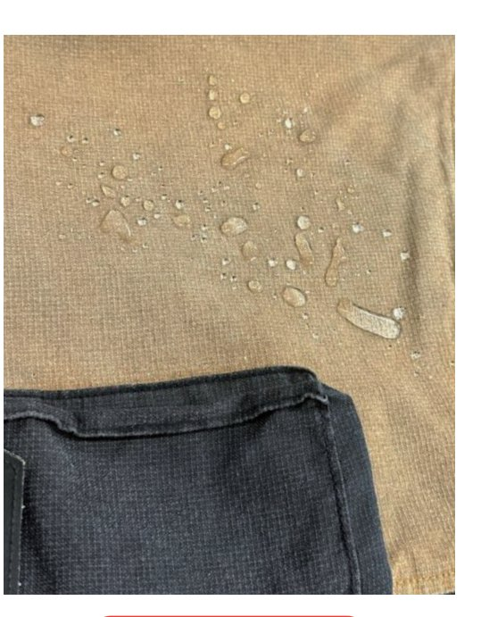
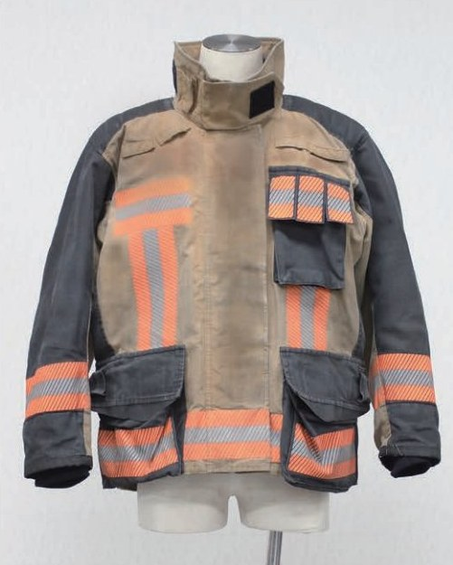
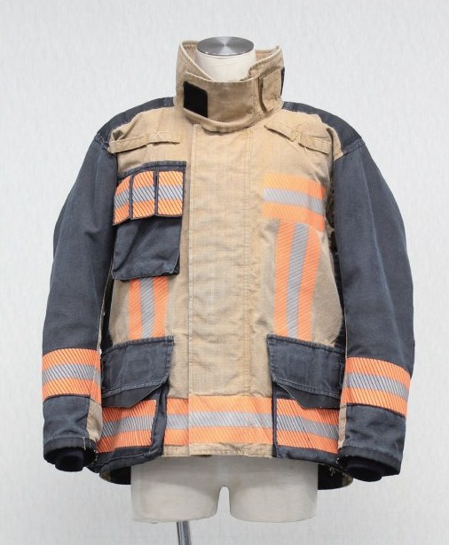
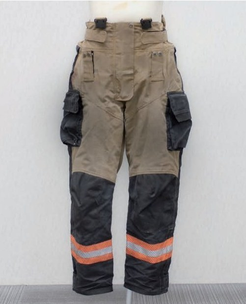
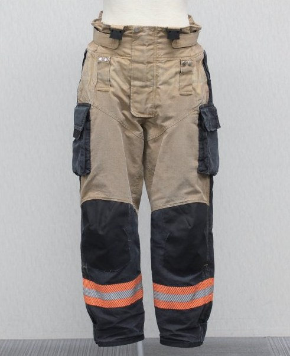

SURVEY
消防隊員のお困りごとは、
ニオイ・撥水・汚れに集中
全国の消防隊員の皆さまが気持ちよく消火活動に臨めるよう、装備のお手入れを専門クリーニングで支援します
CARE RISK
自己流のお手入れが、
防火服の機能低下につながることがあります
ブラシでゴシゴシする
生地を傷め、撥水効果がなくなります
天日干し
色褪せ、生地の劣化につながります
傷んだ生地や機能の低下した防火服は、消防隊員の安全に関わります
SERVICE
洗うだけでなく、
状態確認・撥水加工・返却資料まで対応
素材に応じた専門クリーニング
生地・部位に合わせた洗浄方法で丁寧に洗います
撥水加工
クリーニングと合わせて撥水加工を施します
ビフォーアフター資料作成
（初回のみ）
（初回のみ）
クリーニング前後の状態が分かる資料をお渡しします
BEFORE / AFTER
目で見てわかる、
クリーニング後の変化


臭気測定器比較
Before 211
→
After 004
レベル値200は焼肉後の服のニオイ例です


撥水性能の復元
撥水加工により、撥水性能の回復を目指します


上着（全体）の洗い比較


パンツ（全体）の洗い比較
PROCESS
クリーニングの流れ
1
お預かり
お客様より都ユニリースへ発送いただきます
2
検品
防火服の状態、汚れ具合、アイテム数量を確認します
3
洗濯・撥水加工
検品で問題ないことを確認の上、洗濯工程に入り、撥水加工を施します
4
梱包・返却
お客様へ返却します 届きましたらすぐに着用が可能です
お預かりした防火服は、熟練のスタッフが丁寧に洗濯し、検品を行い梱包してお返しします
FAQ
よくあるご質問
初回お試しはできますか？+
初回はお試しとして無償クリーニングを実施しています ビフォーアフター資料を付けて返却します
撥水加工はできますか？+
対応できます クリーニング後に撥水加工を施し、撥水性能の回復を目指します
問い合わせ方法を教えてください+
お電話（0120-630-080）にてご相談ください 受付対応時間は10時〜17時です